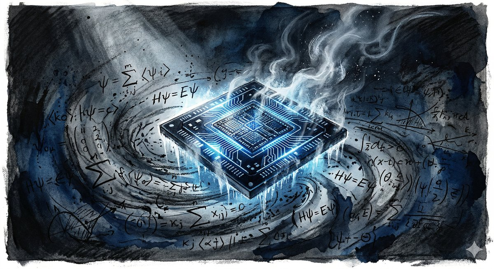
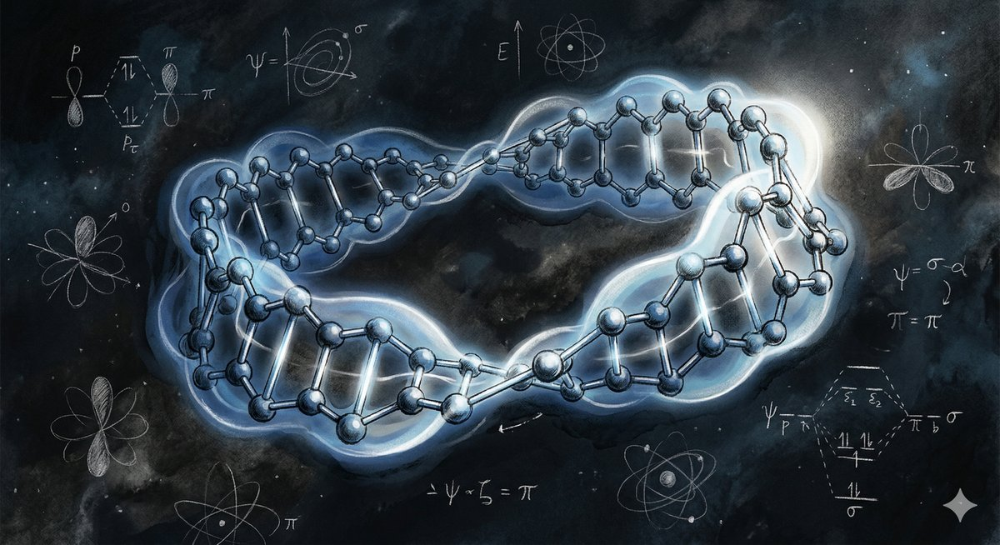
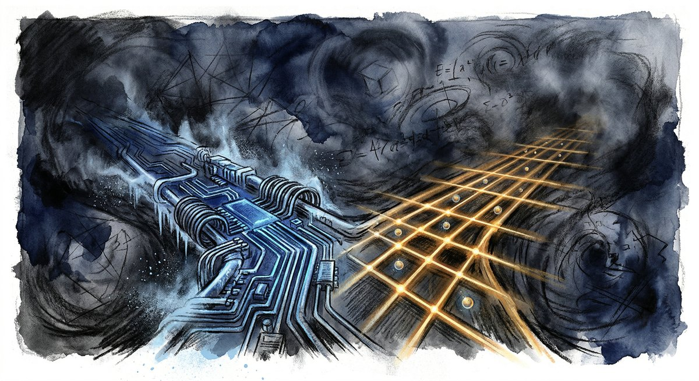

Somewhere in a Google data center in Santa Barbara, there exists a machine that operates at fifteen millikelvins — colder than the void between galaxies. It manipulates information encoded in the quantum states of superconducting circuits, coaxing electrons into superpositions that would have made Schrödinger weep with recognition. And this week, the team that built it published a paper explaining, with mathematical precision, how a somewhat larger version of the same machine could crack the encryption protecting $600 billion worth of Bitcoin in approximately nine minutes.
They also explained, with equal precision, why they wouldn't be sharing the details of how.
This is the strange moment in which quantum computing finds itself — powerful enough to threaten, too nascent to deliver, and paradoxically obligated to prove both at once. In the span of a single week in late March 2026, the field offered a sequence of dispatches that, taken together, read less like a technology news cycle and more like the opening chapters of a new era. A molecule that shouldn't exist was synthesized and understood only because a quantum computer could model its impossible geometry. A protein — the messy, folded, water-fearing kind that drives the chemistry of life — was simulated on quantum hardware for the first time. Google announced it was hedging its bets on the very physics of its machines, pursuing two fundamentally different architectures simultaneously. And on Wall Street, the stocks of companies with combined revenues smaller than a mid-tier restaurant franchise traded at valuations that presuppose a revolution.
The revolution may well be coming. But the interesting question isn't whether. It's the texture of the transition — the nine minutes between the world we have and the one we're building.

"Colder than the void between galaxies"
The Proof You Can't See
On March 30, Google Quantum AI published a 57-page whitepaper with a deceptively calm title about "safeguarding cryptocurrency." The substance was anything but calm. The paper demonstrated that the quantum resources required to break the elliptic curve cryptography underpinning Bitcoin, Ethereum, and virtually every major cryptocurrency are roughly twenty times smaller than previously estimated. Where earlier analyses suggested you'd need millions of physical qubits — a number that felt comfortably distant — Google's team showed that fewer than half a million would suffice. On a superconducting architecture using surface code error correction, the computation could be realized with fewer than 1,200 logical qubits and 90 million Toffoli gates.
The number that seized headlines, though, was nine. As in minutes. Once a public key is exposed during a transaction — a window that exists for every Bitcoin transfer — a sufficiently powerful quantum computer running a primed version of Shor's algorithm could extract the private key in nine to twelve minutes. Roughly 6.9 million Bitcoin, about a third of all coins in existence, sit in wallets whose public keys are already exposed on the blockchain. At current prices, that's a vulnerability measured in hundreds of billions of dollars.
Google proved it could break Bitcoin's encryption — and then refused to show how, in a move that may redefine responsible disclosure for the quantum age.
But the most remarkable aspect of the paper wasn't the vulnerability itself. It was the method of disclosure. Google didn't publish the quantum circuits. Instead, the team constructed a zero-knowledge proof — a cryptographic technique that allows a claim to be verified without revealing any of the underlying information. In essence, Google proved it had compiled circuits capable of solving the 256-bit elliptic curve discrete logarithm problem, and anyone with sufficient expertise could verify this claim, but no one could extract the actual attack methodology from the proof.
The approach was developed in coordination with the U.S. government, and Google is proposing it as a model for how the quantum research community should handle sensitive vulnerability disclosures going forward. It's an elegant solution to an unprecedented problem: how do you warn the world that a lock can be picked without handing out lockpicks?
Google's own recommendation is blunt. Blockchains should migrate to post-quantum cryptography by 2029. The company is committing to the same deadline for its own infrastructure. Three years. In the timescale of cryptographic transitions — the kind that require consensus across decentralized networks that were specifically designed to resist coordinated change — three years is practically tomorrow.
"How do you warn the world that a lock can be picked without handing out lockpicks?"
The Molecule That Shouldn't Exist
While Google was busy proving what quantum computers might destroy, a team spanning IBM, the University of Manchester, Oxford, ETH Zurich, EPFL, and the University of Regensburg was demonstrating what they can create. Published in Science on March 5, their paper described the first experimental observation of a half-Möbius electronic topology in a single molecule — a structure so exotic that classical computers couldn't fully characterize it.
The molecule in question, C₁₃Cl₂, was assembled atom by atom at IBM's research lab from a custom precursor synthesized at Oxford. Individual atoms were removed one at a time using precisely calibrated voltage pulses under ultra-high vacuum at temperatures near absolute zero. The result was a molecular architecture in which the electron orbitals twist through ninety degrees with each circuit — requiring four complete loops to return to the starting phase. If that sounds like a mathematical curiosity, consider: this half-Möbius topology can be reversibly switched between clockwise-twisted, counterclockwise-twisted, and untwisted states. Electronic topology is no longer a property to be discovered. It is one that can be deliberately engineered.
Classical computation hit a wall almost immediately. The electrons within C₁₃Cl₂ interact in deeply entangled ways, each influencing all the others simultaneously. Modeling that behavior requires tracking every possible configuration of those interactions at once — a computational demand that grows exponentially. A decade ago, researchers could exactly model sixteen electrons on a classical machine. Today, with all the improvements in algorithms and hardware, that number has crept to eighteen. The half-Möbius molecule demanded analysis of thirty-two.
A decade ago, classical computers could model 16 electrons exactly. Today: 18. The half-Möbius molecule demanded 32.
Enter IBM's quantum-centric supercomputer and an algorithm called SqDRIFT — a sample-based quantum diagonalization technique that explored an active space far beyond what brute-force classical methods could directly access. The quantum hardware didn't just confirm the molecule's structure. It revealed properties that were genuinely unreachable by other means. This is the quiet crossing of a threshold that quantum computing's critics said might never arrive: a case where quantum simulation does something that classical simulation demonstrably cannot, and the result is a piece of genuine scientific discovery rather than a benchmark or a press release.

"Electronic topology is no longer a property to be discovered — it is one that can be deliberately engineered"
The Protein and the Supercomputer
If the half-Möbius molecule proved that quantum computers can illuminate exotic physics, the Cleveland Clinic-IBM collaboration published just weeks later suggested something arguably more consequential: that they might illuminate ordinary biology. The team demonstrated a hybrid quantum-classical workflow to approximate the electronic structure of Trp-cage, a 303-atom miniprotein, using IBM's Quantum Heron r2 processor.
Trp-cage is not, by protein standards, particularly large. It is, however, particularly useful. Despite its modest size, it possesses features common to much larger biomolecules — a hydrophobic core, hydrogen bonding networks, and the capacity for complex three-dimensional folding. It's a proving ground, a scale model of the challenges that quantum biology will eventually need to solve.
The workflow itself was a hybrid construction. A technique called wave function-based embedding fragmented the protein into computationally tractable clusters, each encompassing a local region around an atom and the entangled electronic structure surrounding it. The quantum hardware then solved these clusters using sample-based quantum diagonalization — the same family of algorithms that proved decisive for the Möbius molecule.
The results were competitive with classical approaches and, in some respects, approached the accuracy of the most computationally demanding classical methods available. More significantly, the approach scales: the Cleveland Clinic team explicitly noted that the workflow extends beyond Trp-cage to larger proteins, positioning it as a tool for pharmaceutical research and molecular simulation at scales that matter to drug discovery.
The quiet implication is profound. The $2.6 trillion global pharmaceutical industry spends roughly $2 billion and twelve to fifteen years developing each new drug, with a success rate that rarely exceeds ten percent. Much of that cost and time is consumed by the molecular simulations that determine whether a candidate drug will bind, fold, or simply dissolve into chemical noise. If quantum-enhanced simulation can compress even a fraction of that timeline, the economic and humanitarian implications dwarf any cryptocurrency vulnerability.
Two Roads Through the Quantum Wilderness
Google, meanwhile, was busy hedging a very different kind of bet. On March 24, the company announced that it was expanding its quantum computing program to include neutral atom hardware — a fundamentally different approach from the superconducting qubits that have defined Google's quantum effort since the Sycamore era. To lead the new initiative, Google hired Dr. Adam Kaufman, an atomic physicist from JILA and the University of Colorado Boulder, who will build a team in Colorado while maintaining his academic appointment.
The rationale is rooted in the complementary physics of the two approaches. Superconducting qubits — the kind inside Google's existing processors — excel at circuit depth. They can execute millions of gate and measurement cycles, each taking roughly a microsecond, making them ideal for long, complex sequences of operations. But scaling up the number of qubits is hard. Neutral atom systems invert the problem. Using individual atoms trapped in optical lattices, they've already scaled to arrays of about ten thousand qubits with flexible connectivity. The trade-off is speed: their cycle times are measured in milliseconds, roughly a thousand times slower than their superconducting cousins.
One architecture scales in time. The other scales in space. Google is betting it will need both to build a machine that works.
Google's announcement was notable for its candor. The company stated it is "increasingly confident that commercially relevant quantum computers based on superconducting technology will become available by the end of this decade," while simultaneously investing in an alternative architecture that might prove more scalable in the long run. The program is built on three pillars: quantum error correction, experimental hardware development, and academic research collaboration.
The strategic logic is sound, even if it reads like a concession to uncertainty. In the history of computing, the winning architecture was rarely obvious in advance. The transistor competed with vacuum tubes for more than a decade. RISC and CISC processors argued for twenty years before ARM settled the question. Quantum computing is young enough that placing a single bet would be an act not of confidence but of hubris. Semafor described the move as Google "hedging its quantum bets" — but hedging, in this context, looks a lot like wisdom.

"In the history of computing, the winning architecture was rarely obvious in advance"
The $930 Million Warning
And then there is Wall Street, which has never met a paradigm shift it didn't want to securitize. In the final week of March, the combined market capitalizations of D-Wave Quantum, Rigetti Computing, IonQ, and Quantum Computing Inc. continued to trade at valuations that bear approximately no relationship to their combined revenues. Rigetti, at $16 per share, reported quarterly revenue of $1.9 million — a number you might associate with a successful dental practice rather than a company valued in the billions.
The dissonance is real but not necessarily irrational. D-Wave and Rigetti are pursuing genuinely different paths to quantum capability — D-Wave's quantum annealing approach generates steadier near-term revenue from optimization problems, while Rigetti's gate-based architecture offers more long-term upside. IonQ's trapped-ion systems occupy yet another point on the technological spectrum. The Motley Fool framed the investment question as a choice between architectures: which flavor of quantum computing will win?
But a Motley Fool analysis published in late March offered a sobering counterpoint, noting that combined revenues for the four companies were accompanied by a cumulative $930 million in stock compensation over just the past twelve months — a figure that suggests these companies are paying their employees in equity priced for a revolution that hasn't arrived yet. Wall Street analysts don't expect quantum computers to be practically useful for commercial problem-solving until the end of the decade, with almost no evidence that businesses are generating positive returns on their quantum investments today.
The quantum computing investment thesis, in other words, is a bet on the timeline. If the nine-minute problem becomes real by 2030, and if quantum simulation of proteins accelerates drug discovery, and if neutral atoms or superconducting qubits or trapped ions can scale to error-corrected machines with a million physical qubits — then today's valuations will look prescient. If any of those ifs collapse, the correction will be spectacular.
Coda
There's a curious symmetry to these five stories. Google proves it can break encryption but refuses to show how. IBM builds a molecule that shouldn't exist by using a computer that barely does. The Cleveland Clinic simulates life's building blocks on hardware that operates at the edge of physical law. Google hedges between two architectures because even the world's most advanced quantum team can't be sure which physics will win. And Wall Street values the whole enterprise as though the outcome were already determined.
What connects them is the particular quality of this moment in quantum computing's trajectory — a moment that resembles nothing so much as the classical computing industry circa 1958, when the transistor was proven but the integrated circuit was a sketch on a napkin, and the distance between laboratory demonstration and world-changing product was measured in decades that felt, to the people living through them, like they could have gone either way.
The nine-minute problem is not, ultimately, a problem about Bitcoin. It is a problem about the gap between capability and consequence — the uncertain interval between proving that something is possible and learning to live in the world where it is. We have built machines that operate at temperatures colder than deep space, that manipulate individual atoms to construct impossible molecules, that can simulate the quantum behavior of proteins. We are, by any reasonable measure, in the early innings of something enormous.
The question that no whitepaper can answer — not with a zero-knowledge proof, not with a stock valuation, not even with a molecule that twists through four dimensions — is what we will do with the nine minutes between the lock clicking open and whatever comes next.